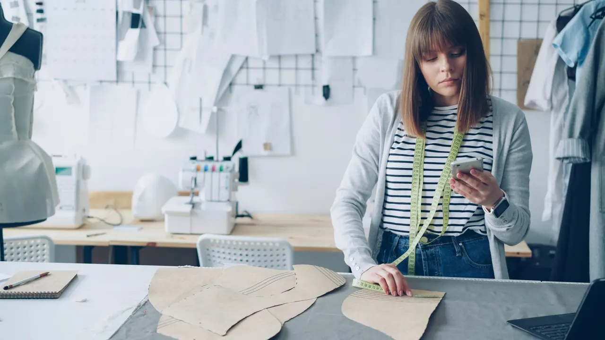

1 in 3
Bullying and exclusion
UNESCO (opens in a new tab) reports that bullying affects around one pupil in three worldwide each month.
Hope / Talent / Art / Fashion / Life
Art, fashion and creative spaces for young people to express their authentic selves, build resilience and find connection.
Create. Overcome. Connect.

ILLUSTRATIVE ATELIER / VITALY GARIEV
Choose your way in
 Art. Fashion. Your expression.
Create
Art. Fashion. Your expression.
Create
 Move. Reflect. Try again.
Overcome
Move. Reflect. Try again.
Overcome
 Make things. Make connections.
Connect
Make things. Make connections.
Connect
Illustrative photography. People shown are not HTAFL members or community submissions.
Why HTAFL exists
The idea began in a hostel room. A song, the need to be understood, and a child’s drawing helped shape what HTAFL would become.
You do not have to be good at creating something for what you create to mean something.Explore why HTAFL exists
Research / context
1 in 3
UNESCO (opens in a new tab) reports that bullying affects around one pupil in three worldwide each month.
5.3% / 3.4%
WHO (opens in a new tab) estimates anxiety disorders in 5.3% and depression in 3.4% of adolescents aged 15–19 worldwide. These are separate estimates, not a combined total.
3,000+
WHO’s 2019 scoping review (opens in a new tab) brought together evidence from more than 3,000 studies on arts, health and wellbeing across the lifespan. It covered varied study designs and activities.
Creative activity can offer opportunities for expression and connection. Fashion is one HTAFL route into identity and making. The broad arts evidence does not establish that fashion participation treats depression or anxiety, and these figures do not measure HTAFL’s impact.
A 2025 study (opens in a new tab) of 710 Brazilian women reported both positive and negative associations between fashion clothing involvement and mental health. This cross-sectional survey cannot establish a treatment effect or be generalized to every young person.
Collaboration
Join us in our mission to transform lives through fashion and art. We're seeking partners who share our vision of creating a world where young people can thrive free from hate, with confidence in their unique identity and creative potential.